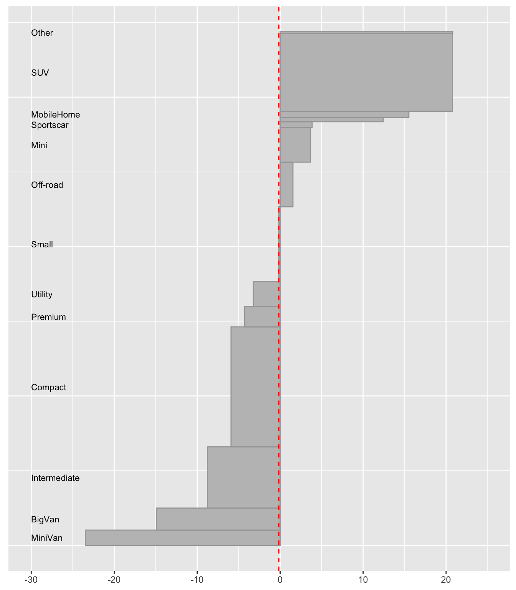
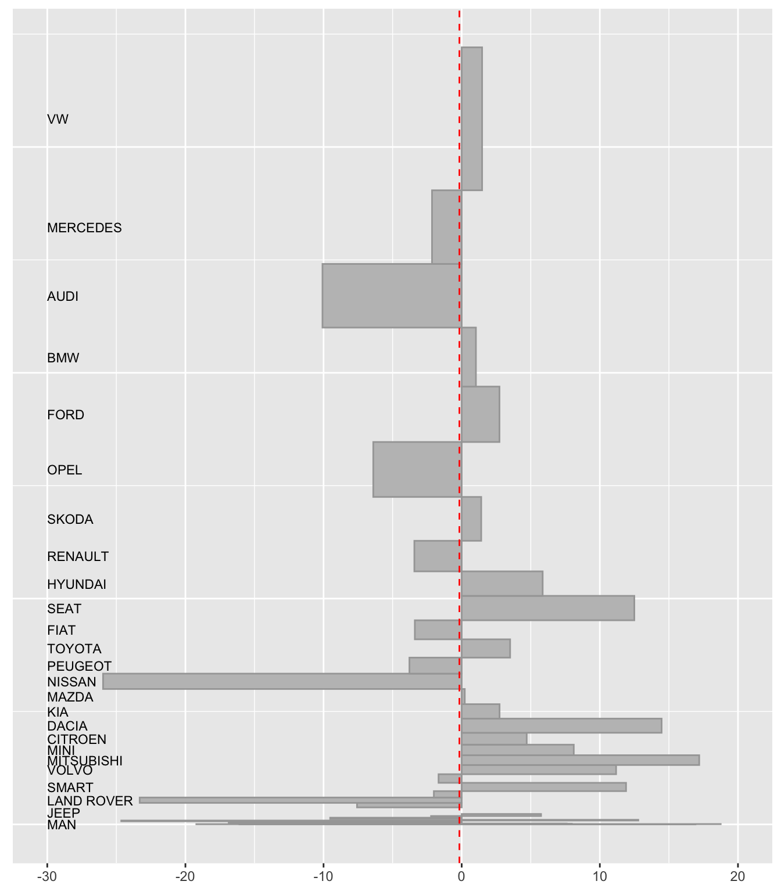
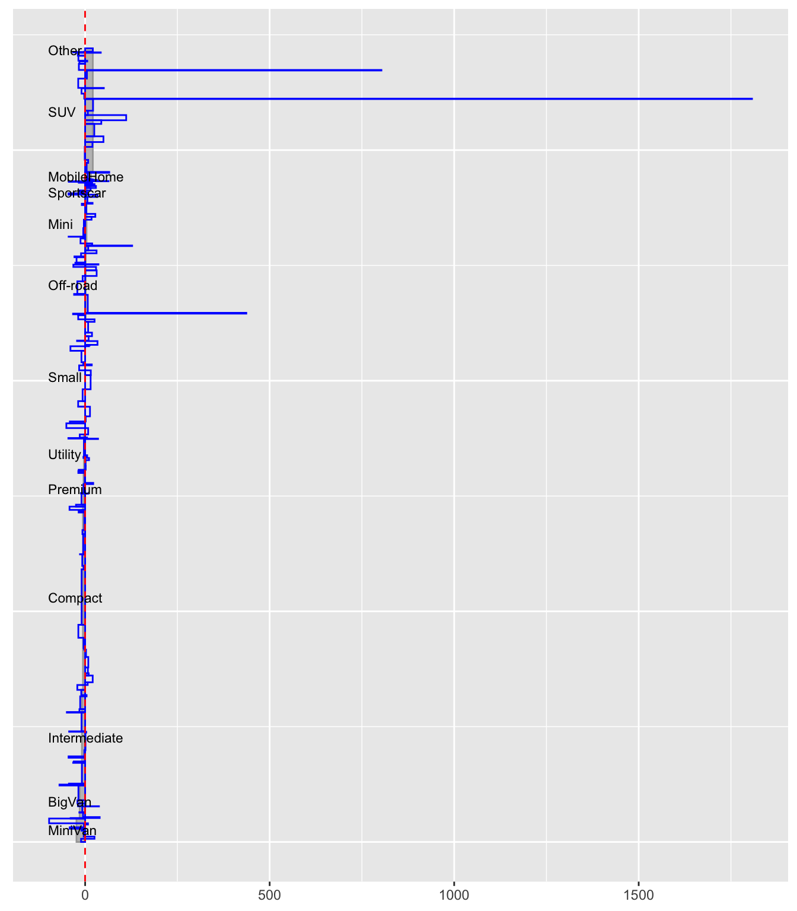
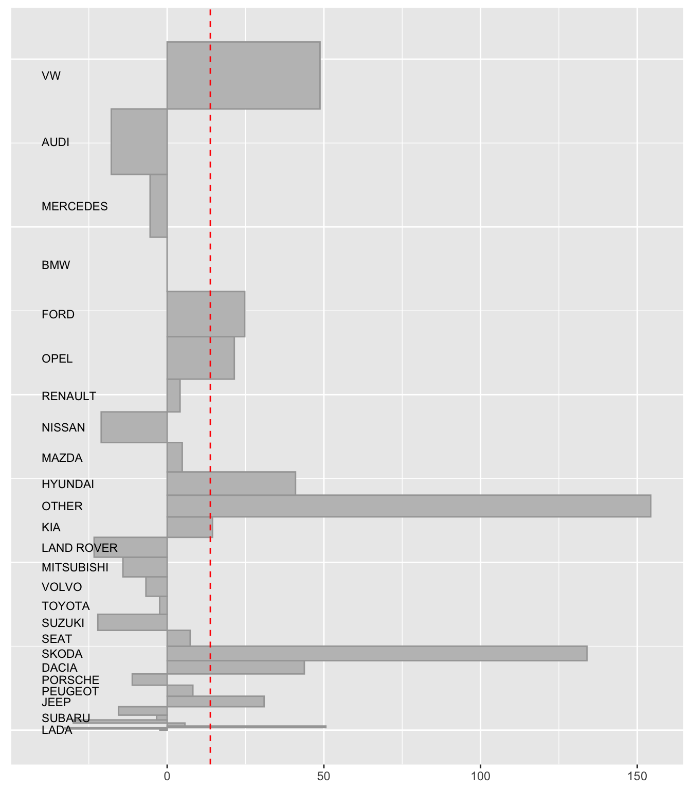
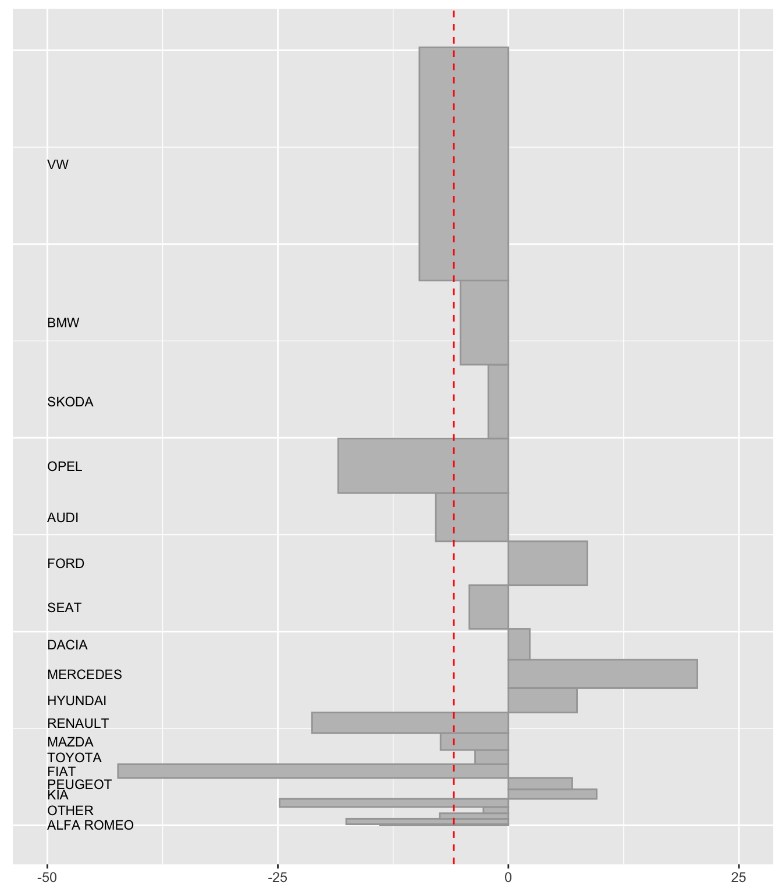

PreparingDataForUpAndDownPlots.RmdUpAndDown plots show percentage and absolute changes for subgroups at different levels. The package needs initial and final values for each item and (possibly) a weight variable measuring how important each item is. Here is an example from the German car sales data set (AutoSales).
library(UpAndDownPlots)
library(tidyverse)
yy <- ud_prep(AutoSales, v1="sales17", v2="sales18", levs=c("Segment"), sortLev=c("perc"))
y1 <- ud_plot(yy, labelvar="Segment")
y1$uadl
Fig 1: An UpAndDown plot of vehicle sales by market segment. SUVs had the biggest increase both in percentage and volume. Vans, Intermediates, and Compacts all lost ground.
Consider looking at which manufacturers did best. Running the following code generates an error message showing that at least one manufacturer had no sales in 2017.
This code shows which manufacturers had zero initial sales.
AutoSales0 <- AutoSales %>% group_by(Manufacturer) %>% summarise(Sales17=sum(sales17)) %>% filter(Sales17==0)
AutoSales0## # A tibble: 1 x 2
## Manufacturer Sales17
## <chr> <dbl>
## 1 ALPINE 0Apart from Alpine, several manufacturers may have had low sales and then big percentage changes. The next plot sorts by sales in 2017 to place the smaller manufacturers at one end. It also limits the range of percentage changes to between -20% and +20% (although larger changes will be drawn if they can be fit on the plot).
yv <- ud_prep(AutoSales %>% filter(!(Manufacturer=="ALPINE")), v1="sales17", v2="sales18", levs=c("Manufacturer"), sortLev=c("base"))
y2 <- ud_plot(yv, labelvar="Manufacturer", vscale=c(-20, 20))
y2$uadl
Fig 2: Percentage change in numbers of vehicles sold by manufacturer, comparing figures for 2018 with figures for 2017, sorting by sales in 2017. In percentage terms Audi and Opel did badly amongst the larger companies while Ford did best. Nissan did particularly badly amongst the medium-sized companies, while Seat did very well.
Notice in Figure 2 how the percentage changes tend to increase as the companies get smaller. A warning message says that 8 rectangles could not be drawn, meaning 8 percentage changes were too big to fit on the plot. There is not space for all the manufacturer names as labels, but this only affects the companies with small initial sales in Figure 2.
When a new car is introduced, the initial sales might be zero or low and the final sales high (e.g., the Volvo XC40 jumped from sales of 14 to sales of 6898). Infinite or extreme percentage changes cannot be accurately shown. Vehicles with the same name can be sold in two different market segments (e.g., Renault Trafic in both MobileHomes and Utilities). Sometimes a vehicle is reclassified (e.g., the BMW X4 was switched from SUV to Off-road in April 2018). Manufacturers may leave a sector and offer a vehicle in another (e.g., the Opel Meriva was a MiniVan and the Opel Crossland X is an SUV). Occasionally values may be missing for some reason or other.
If any of these difficulties, or indeed others, arise, they have to be dealt with before drawing final graphics. Most of the issues with AutoSales concern vehicles with low initial and final sales and they can be grouped into an “Others” category. As usual when discussing how to deal with messy real data, you can never be sure that the next dataset will not have some new problem that you have not met before. Each must be handled on its own merits.
The fuller version of the German car sales data set (AutoSales) offers several examples of the difficulties there can be. For the AutoSalesX dataset, vehicles selling less than 1000 in either year have been reclassified as ‘Other’ and the data have been aggregated by manufacturer within segments, so there are no sales for individual models.
Now you can look at sales by manufacturer within segments. The next figure shows that there are still difficulties.
yw <- ud_prep(AutoSalesX, v1="sales17", v2="sales18", levs=c("Segment", "Manufacturer"), sortLev=c("perc", "perc"))
y3 <- ud_plot(yw, labelvar="Segment")
y3$uadl
Fig 3: Percentage changes by manufacturer within segment. Three manufacturers have increases of over 400% within a segment, even though Figure 2 shows that overall increases for manufacturers were generally much lower.
The top ten percentage changes in the figure can be found using
## # A tibble: 10 x 3
## Segment Manufacturer percCh
## <fct> <fct> <dbl>
## 1 SUV VW 1807.
## 2 SUV SKODA 803.
## 3 Off-road OTHER 437.
## 4 Mini PEUGEOT 127.
## 5 SUV OTHER 111.
## 6 MobileHome CITROEN 65.2
## 7 MobileHome PEUGEOT 63.2
## 8 SUV ALFA ROMEO 50.6
## 9 SUV HYUNDAI 49.6
## 10 SUV DACIA 43.8The biggest change is due to VW introducing the T-ROC SUV in August 2017. Sales up to the end of that year are recorded as 1851 with 35299 in 2018. Many people would say that the VW Tiguan and VW Touareg are SUVs, but the KBA report them in the Off-road sector. Working with market share data is interesting but problematic. Solutions can be to combine segments or to look at individual segments. It depends what the aims of the analyses are.
Combining the SUV and Off-road segments is shown in Figure 4.
yz <- ud_prep(AutoSalesX %>% filter(Segment %in% c("Off-road", "SUV")), v1="sales17", v2="sales18", levs=c("Manufacturer"), sortLev=c("base"))
y4 <- ud_plot(yz, labelvar="Manufacturer")
y4$uadl
Fig 4: Percentage changes for the combined segments Off-road and SUV. There are big increases for SKODA because of a new model replacing an older one, a switch that was missed by the way this reduced dataset was constructed and for OTHER, because many new vehicles came out.
Figure 5 shows the biggest segment, Compact, on its own. There are no dramatic increases in this declining segment, so there are no issues and the plot gives a good overview.
yx <- ud_prep(AutoSalesX %>% filter(Segment=="Compact"), v1="sales17", v2="sales18", levs=c("Manufacturer"), sortLev=c("base"))
y5 <- ud_plot(yx, labelvar="Manufacturer")
y5$uadl
Fig 5: Percentage changes in the Compact segment. The whole segment declined and of the bigger manufacturers only Mercedes and Ford had year-on-year increases.